방송통신산업기사 (2014-10-04 기출문제)
1과목: 디지털 전자회로
1. 전압 변동률이 15[%]의 정류 회로에서 무부하시 전압이 6[V]일 때, 부하시 전압은 약 얼마인가?
- 2.4[V]
- 3.5[V]
- 4.7[V]
- 5.2[V]
(정답률: 88%)

2. 다음 그림과 같이 회로에 정현파가 인가됐을 때 나타나는 파형은? (단, 다이오드 D1의 항복전압은 VZ1=5[V], D2의 항복전압은 VZ2=6[V]이고, 각 다이오드는 이상적이라고 가정한다.)
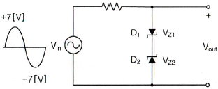
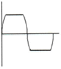
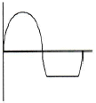
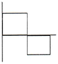
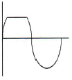
(정답률: 89%)
3. 다음 중 반파정류기의 리플 함유율을 적게 하는 방법으로 맞지 않는 것은?
- 입력측 평활용 콘덴서의 정전용량을 크게 한다.
- 출력측 평활용 콘덴서의 정전용량을 크게 한다.
- 평활용 초크코일의 인덕턴스를 크게 한다.
- 시정수를 작게 한다.
(정답률: 69%)
4. 다음 중 다이오드의 종류에 따른 용도로 틀린 것은?
- PIN 다이오드 : RF 스위치용
- 버랙터(Varactor) 다이오드 : 전압제어 발진기용
- 임팻(IMPATT) 다이오드 : 디지털 표시장치용
- 제너 다이오드 : 전압안정화 회로용
(정답률: 65%)
5. 다음 중 낮은 주파수 대역에서 높은 주파수 대역에 걸쳐 일정한 크기의 스펙트럼을 가진 연속성 잡음은 무엇인가?
- 트랜지스터 잡음
- 자연잡음
- 백색잡음
- 지터잡음
(정답률: 81%)
6. 다음 중 부궤환 증폭회로의 특징이 아닌 것은?
- 이득증가
- 비선형 일그러짐 감소
- 잡음감소
- 고주파 특성의 개선
(정답률: 69%)
7. 다음 그림의 연산 증폭기 회로의 전압증폭률(Vo/Vs)은 얼마인가?
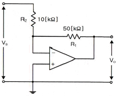
- -5
- -1
- 5
- 10
(정답률: 65%)
8. 다음 그림의 발진기 회로에서 궤환율(β)은 얼마인가? (단, R=1[kΩ], R1=18[kΩ], R2=2[kΩ], C=1[μF]이다.)
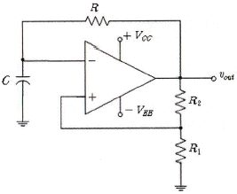
- 0.6
- 0.7
- 0.8
- 0.9
(정답률: 54%)
9. 증폭도 A인 증폭기에 궤환율 β로 정궤환 되었을 경우 발진이 이루어지는 조건으로 맞는 것은?
- Aβ = 1
- Aβ = 0
- Aβ ＞ 1
- Aβ ＜ 1
(정답률: 90%)
10. 다음 중 음성 신호의 송신측 PCM 과정이 아닌 것은?
- 표본화
- 부호화
- 양자화
- 복호화
(정답률: 96%)
11. 반송파의 위상과 진폭을 상호 직교하며 신호를 혼합하는 변조 방식은?
- ASK
- FSK
- PSK
- QAM
(정답률: 85%)
12. 트랜지스터의 스위칭 시간에서 Turn-off 시간에 해당되는 것은?
- 하강시간
- 축적시간 + 하강시간
- 상승시간 + 지연시간
- 축적시간
(정답률: 75%)
13. 다음 중 클램퍼 회로를 구성하는 부품이 아닌 것은?
- 다이오드
- 저항
- 커패시터
- 인덕터
(정답률: 45%)
14. 논리함수
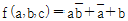
의 부정을 구한 것은?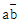
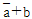
- 0
- 1
(정답률: 64%)
15. 다음 그림의 회로에서 주파수가 1,024[kHz]인 디지털 신호가 입력되었을 경우 최종 출력주파수(Fo)는 얼마인가?
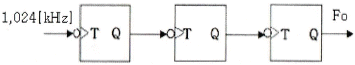
- 512[kHz]
- 256[kHz]
- 128[kHz]
- 64[kHz]
(정답률: 67%)
16. 다음의 논리회로도가 나타내는 플립플롭회로는 무엇인가?
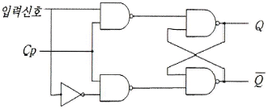
- T 플립플롭
- D 플립플롭
- J-K 플립플롭
- S-R 플립플롭
(정답률: 69%)
17. 다음 중 비동기식 카운터에 대한 설명으로 틀린 것은?
- 동기식 카운터에 비해 입력신호의 전달지연시간이 길다.
- 동기식에 비해 논리상의 오차 발생비율이 많다.
- 구조상으로 동기식에 비해 회로가 간단하다.
- 같은 클럭펄스에 의해 트리거 된다.
(정답률: 78%)
18. 2n개의 입력 데이터를 n개의 스트로브 제어신호를 이용하여 입력 데이터 중 1개를 선택하는 기능을 갖는 논리회로를 무엇이라고 하는가?
- 디멀티플렉서
- 디코더
- 인코더
- 멀티플렉서
(정답률: 78%)
19. 연산 논리 장치라 하며 CPU 내에서 모든 연산이 이루어지는 곳을 무엇이라고 하는가?
- LSI
- ALU
- Accumulator
- Flag Register
(정답률: 80%)
20. 기억된 정보를 보존하기 위해 주기적으로 리플래시(Refresh)를 해주어야 하는 기억소자는?
- Dynamic ROM
- Static ROM
- Dynamic RAM
- Static RAM
(정답률: 85%)
2과목: 방송통신 기기
21. 다음 중 방송용 카메라에 많이 사용되는 CCD에 대한 설명으로 틀린 것은?
- 촬상관에 비해 S/N비가 높다.
- 강한 광선에 의해 소자가 손상되는 Burn-In 현상이 없다.
- 물결무늬 현상이 잘 생기지 않는다.
- 소형, 경량 및 저소비 전력화가 용이하다.
(정답률: 87%)
22. 다음 중 전파에 관한 일반적인 설명으로 틀린 것은?
- 전파는 진동방향과 수직방향으로 진행하는 횡파이다.
- 전파는 법률로 관리하는 3,000[GHz] 이하의 전자파이다.
- 초단파대 이상 주파수의 전파는 주로 가시거리 통신을 한다.
- 파장이 짧은 전파일수록 회절성이 강해서 장애물 통신에 유리하다.
(정답률: 72%)
23. 다음 중 초단파(VHF)에 대한 설명으로 옳지 않은 것은?
- 파장이 1[m]~10[m] 정도이다.
- 간섭성과 회절성이 존재한다.
- 전리층에서 반사되므로 대륙간 원거리 통신에 적합하다.
- 극초단파와 더불어 방송과 각종 통신에 가장 많이 이용되고 있다.
(정답률: 82%)
24. 다음 중 국내 FM 방송 송신 안테나에 대한 설명으로 틀린 것은?
- 88[MHz]~108[MHz]의 주파수 대역을 사용한다.
- 서비스 지역의 지형이나 대상에 따라 원편파나 직선편파를 사용한다.
- 소전력용으로는 야기안테나를 사용한다.
- 주로 파라볼라 안테나를 사용한다.
(정답률: 83%)
25. 변조도가 60[%]인 AM 송신기에서 반송파의 평균전력이 500[mW]일 때 출력의 평균전력은?
- 460[mW]
- 520[mW]
- 590[mW]
- 700[mW]
(정답률: 82%)
26. 다음 중 라디오 음원으로 서버를 사용했을 때 가장 좋은 음질을 사용할 수 있는 코딩은?
- WAV
- MP3
- MUSICAM
- MP2
(정답률: 100%)
27. 다음 중 간접주파수 변조방식의 변조기 구성 순서로 맞는 것은?
- 변조신호 → 적분기 → FM 변조기 → 주파수 체배기 → BPF
- 변조신호 → 적분기 → PM 변조기 → 주파수 체배기 → BPF
- 변조신호 → FM 변조기 → 주파수 체배기 → BPF
- 변조신호 → 미분기 → PM 변조기 → 주파수 체배기 → BPF
(정답률: 92%)
28. CD는 스테레오 신호를 각각 44.1[kHz]로 표본화하여 각 비트당 16비트를 할당하고 있다. 초당 기록되는 정보량은 얼마인가?
- 약 1.4[Mbps]
- 약 50[Mbps]
- 약 270[Mbps]
- 약 1.5[Gbps]
(정답률: 95%)
29. 다음 그림은 소출력 아날로그 헤테로다인 TV 중계기의 블록도이다. 괄호 안에 들어갈 기능 블록으로 알맞게 짝지어진 것은?
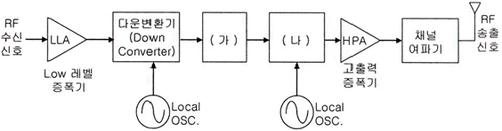
- ㈎ : IF여파기 및 증폭기, ㈏ : 업 변환기(Up Converter)
- ㈎ : 복조기, ㈏ : 변조기
- ㈎ : 변조기, ㈏ : 업 변환기(Up Converter)
- ㈎ : IF여파기 및 증폭기, ㈏ : 변조기
(정답률: 68%)
30. CATV망에서 동축케이블의 감쇠특성에 의해 기울어진 주파수 특성을 보상하기 위하여 사용하는 기기는?
- 분배기
- 등화기
- 분파기
- 방향성 결합기
(정답률: 92%)
31. 다음 중 8VSB 방식 디지털 TV 중계기 복조부의 구성 요소가 아닌 것은?
- RF 튜너
- 아날로그/디지털 변환기(ADC)
- IF 복조기
- RF 보정기(RF Corrector)
(정답률: 60%)
32. 위성방송에서 사용되고 있는 Ku 대역의 상향/하향 주파수(IEEE 권고)는?
- 14/12[GHz]
- 6/4[GHz]
- 20/30[GHz]
- 12/14[GHz]
(정답률: 80%)
33. 방송용 송신기에서 증폭기의 입력 전력이 3[mW]이고, 출력 전력이 3[W]일 때의 이 증폭기의 전력이득은 얼마가 되는가?
- 10[dBm]
- 20[dBm]
- 30[dBm]
- 40[dBm]
(정답률: 60%)
34. 다음 중 주파수제어를 이용한 음향효과 기기는 무엇인가?
- 콤프레서
- 익스펜더
- 이퀄라이저
- 노이즈게이트
(정답률: 92%)
35. 무궁화위성에서 방송용 중계기의 한 채널당 대역폭은 몇 [MHz]인가?
- 70[MHz]
- 45[MHz]
- 36[MHz]
- 27[MHz]
(정답률: 70%)
36. 안테나 소자를 다단으로 설치하는 경우 특정지역에 전계강도가 매우 약한 지점을 무엇이라 하는가?
- 블랭킷 에리어
- Null Point
- 방송수신 불능지역
- 부반송파 신호
(정답률: 94%)
37. 디지털오디오 측정기를 이용하여 AES/EBU 오디오 블록을 48[kHz]로 표본화한다면 블록의 길이는 얼마인가? (단, 프레임은 192개임)
- 약 20.83[μs]
- 약 192[μs]
- 약 4,000[μs]
- 약 6,000[μs]
(정답률: 70%)
38. 다음 중 아날로그 TV 동기신호 발생기의 신호 종류가 아닌 것은?
- 수평 구동신호
- 수직 구동신호
- 휘도 구동신호
- 부반송파 신호
(정답률: 63%)
39. TV 방송의 영상 조정장치의 특성 측정을 위해 2T, 20T 펄스 등의 파형을 발생하는 것은?
- Oscilloscope
- Spectrum Analyzer
- Distortion Factor Meter
- Pattern Generator
(정답률: 75%)
40. 다음 중 지상파 방송과 유선 방송을 디지털 TV 신호분석기로 계측할 때, 나타나지 않는 신호는?
- QPSK
- 8VSB
- 64QAM
- MSK
(정답률: 94%)
3과목: 방송미디어 개론
41. NTSC 아날로그 컬러TV에서 1 프레임(Frame) 주기는?
- 약 15.37[ms]
- 약 33.37[ms]
- 약 168.42[ms]
- 약 336.83[ms]
(정답률: 84%)
42. 다음 중 텔레비전 화면구성의 용어에 대한 설명으로 잘못된 것은?
- 휘도 : 전체적 또는 평균적 조명의 강도로서 화면에서 배경의 밝기를 결정한다.
- 콘트라스트 : 재현된 화면의 검은 부분과 흰 부분 사이의 강도 차(흑백의 대비)를 의미한다.
- 해상도 : 텔레비전 화면의 최대 해상도는 주사선수와 무관하다.
- 시계거리 : 노이즈를 구분할 수 없을 정도의 거리를 말하며, 적당한 시계거리는 화면 대각선 길이의 3~5배이다.
(정답률: 86%)
43. FM 변조에서 신호파 주파수가 50[kHz]이고, 최대주파수 편이가 200[kHz]일 때의 변조지수는?
- 4
- 5
- 10
- 25
(정답률: 95%)
44. FM 라디오 방송 대역의 하한에 가장 근접한 TV 채널 번호는?
- 2
- 6
- 7
- 13
(정답률: 71%)
45. 다음 중 디지털 방송의 특징이 아닌 것은?
- 다채널
- 고품질
- 내잡음성
- 송신출력 증가
(정답률: 95%)
46. 방송국에서 일반적으로 스튜디오를 내려 볼 수 있게 설치된 것으로 영상전환, 카메라 조정, 조명 및 음향 조정 등을 수행하는 곳은?
- 부조정실
- 주조정실
- 플로어(Floor)
- SNG
(정답률: 100%)
47. 음향기기 중 고정극판과 진동판 사이에서 음압에 따라 정전용량의 변화를 이용한 마이크로폰은?
- 카본 마이크로폰
- 크리스털 마이크로폰
- 다이내믹 마이크로폰
- 콘덴서 마이크로폰
(정답률: 89%)
48. 다음 중 촬영시 카메라 동작에서 피사체의 움직임을 따라 다니는 것은?
- Crain Shot
- Reaction Shot
- Follow Shot
- PAN
(정답률: 90%)
49. 디지털 TV나 DVD 등에서 대사나 설명을 화면의 자막으로 표시하는 것으로 사용자가 그 기능을 선택한 경우에만 화면에 나타나는 자막 방식은?
- Burned-in Caption
- Open Caption
- Closed Caption
- Hardcoded Caption
(정답률: 85%)
50. 다음 중 청각매체에 해당되지 않는 것은?
- 음성
- 음악
- 음파
- 음향
(정답률: 95%)
51. 일반적인 TV 수신 안테나 길이와 수신주파수 파장과의 관계는?
- 수신주파수 파장의 2배 길이
- 수신주파수 파장의 0.5배 길이
- 수신주파수 파장의 1배 길이
- 수신주파수 파장의 0.25배 길이
(정답률: 87%)
52. 다음 중 인터넷 방송과 관계가 가장 깊은 항목은?
- FM 방송
- Digital 방송
- 아날로그 방송
- AM 방송
(정답률: 92%)
53. 다음 중 멀티미디어 데이터의 파일 저장 방식이 아닌 것은?
- GUI
- AVI
- MPEG
- MOV
(정답률: 80%)
54. 다음 중 우리나라 지상파 디지털 TV에 대한 설명으로 틀린 것은?
- 영상 부호화 기본 알고리즘으로는 MPEG-2 비디오 방식을 사용한다.
- 변조방식은 8-VSB 방식이다.
- 변조된 신호의 채널당 주파수 대역폭은 9[MHz]이다.
- 전송 속도는 10.762M[symbols/sec]이다.
(정답률: 89%)
55. 우리나라에서 사용되는 지상파 DMB 방송의 비디오 압축방식은?
- H.261 / MPEG-2 Part 10AVC
- H.262 / MPEG-2 Part 10AVC
- H.263 / MPEG-4 Part 10AVC
- H.264 / MPEG-4 Part 10AVC
(정답률: 95%)
56. 다음 중 정재파비(VSWR)에 관한 설명으로 잘못된 것은?
- 수신단에서 반사가 많을수록 정재파비는 커진다.
- 정재파비의 최소값은 0이다.
- 정재파비는 반사계수의 크기만의 함수이다.
- 이론적으로 정재파비는 무한대의 값을 가질 수 있다.
(정답률: 77%)
57. 종합디지털방송(ISDB : Integrated Services Digital Broadcasting)에서 전송방식의 요구조건이 아닌 것은?
- 유연성
- 확장성
- 고품질 전송
- 특이성
(정답률: 79%)
58. 다음 중 지상파 디지털 텔레비전 방송 규격에 대한 설명으로 잘못된 것은?
- ISDB-T는 일본규격으로 13개의 세그먼트로 구성되는 밴드 세그먼트 방식이다.
- DVB-T는 유럽규격으로 COFDM 변조방식을 사용한다.
- ATSC는 미국규격으로 DVB-T에 비해 이동수신이 용이한 방식이다.
- ATSC는 단일반송파 전송방식이며 DVB-T는 다중반송파 전송방식이다.
(정답률: 84%)
59. 다음 중 동축케이블과 쌍연 동선케이블 등에 비해 광케이블이 갖는 장점이라고 볼 수 없는 것은?
- 무유도, 비전도성
- 광대역 특성
- 설치의 용이성
- 저손실 특성
(정답률: 77%)
60. 다음 중 중계 전송선로의 구성조건과 거리가 먼 것은?
- 광대역성
- 접속의 임의성
- 높은 신뢰성
- 낮은 손실성
(정답률: 95%)
4과목: 전자계산기 일반 및 방송설비기준
61. 10진수 0.875를 16진수로 변환한 것으로 옳은 것은?
- 140(16)
- 0.14(16)
- 0.E(16)
- 0.0E(16)
(정답률: 95%)
62. 다음 2진수 연산의 결과 값으로 알맞은 것은?
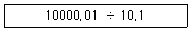
- 110.1
- 101.1
- 1.101
- 1.011
(정답률: 50%)
63. 10진수 0.21875를 2진수로 변환한 것으로 옳은 것은?
- 0.01111
- 0.11101
- 0.00111
- 0.11001
(정답률: 50%)
64. 선형 자료규조인 스택(Stack)에 자료를 삽입할 때 포인터의 변화는?
- 자료 삽입 후 포인터 증가
- 자료 삽입 후 포인터 감소
- 포인터 감소 후 자료 삽입
- 포인터 증가 후 자료 삽입
(정답률: 66%)
65. Unix에서 두 프로세스를 연결하여 프로세스 간 통신을 가능하게 하며, 한 프로세스의 출력이 다른 프로세스의 입력으로 사용됨으로써 프로세스간 정보 교환이 가능하도록 하는 것은?
- 파이프(Pipe)
- 시그널(Signal)
- 포크(Fork)
- 선점(Preemption)
(정답률: 100%)
66. 다음 중 ALU(연산논리장치)에 대한 설명으로 잘못된 것은?
- 산술연산과 논리연산으로 구성된다.
- 이진수를 기반으로 하고 있으며 양수는 2의 보수 형식으로 표현한다.
- 산술연산은 주로 사칙연산을 의미한다.
- 논리연산은 논리 수식의 참과 거짓을 판명하며, AND, OR, NOT, XOR 등이 포함된다.
(정답률: 80%)
67. 중앙처리장치의 효율을 극대화하는 방법으로 하나의 처리기에 둘 이상의 프로그램이 동시에 시뮬레이션하는 기법은 무엇인가?
- 멀티 프로그래밍 방식
- 일괄 처리 방식
- 분산 처리 방식
- 온라인 처리 방식
(정답률: 77%)
68. 다음 중 일반적으로 프로그램을 수행하는데 필수적인 장치가 아닌 것은?
- 연산장치
- 제어장치
- 보조기억장치
- 기억장치
(정답률: 82%)
69. 패킷이 목적지까지 가는 경로를 보여주며 패킷 경로 및 네트워크 상태를 알 수 있는 진단 명령어는?
- ping
- arp
- tracert
- inconfig
(정답률: 67%)
70. 다음 중 데이터의 부호화 방법이 아닌 것은?
- PAM
- NRZ
- RZ
- MANCHESTER
(정답률: 59%)
71. 정보통신공사업자의 시공능력의 평가방법에 있어 경력평가액은 어떻게 산정하는가?
- 실적평가액×공사업영위기간 평점×20/100
- 실적평가액×공사업영위기간 평점×30/100
- 실적평가액×공사업영위기간 평점×40/100
- 실적평가액×공사업영위기간 평점×50/100
(정답률: 84%)
72. 방송채널 사용사업자가 승인유효기간 만료 후 계속 방송을 행하고자 하는 때 어떤 조치를 받아야 하는가?
- 미래창조과학부장관 또는 방송통신위원회의 재허가
- 미래창조과학부장관 또는 방송통신위원회의 재등록
- 미래창조과학부장관 또는 방송통신위원회의 재추천
- 미래창조과학부장관 또는 방송통신위원회의 재승인
(정답률: 85%)
73. 정보통신공사업법령에 의한 공사의 종류 중 방송국설비공사가 아닌 것은?
- 송출 설비공사
- 영상ㆍ음향 설비공사
- 방송관리시스템 설비공사
- 폐쇄회로 텔레비전 설비공사
(정답률: 87%)
74. 다음 중 관로의 매설기준에서 항목별 지면에서 관로상단까지의 거리를 바르게 나타낸 것은?
- 차도 : 1.0[m] 이상
- 보도 : 0.5[m] 이상
- 철도, 고속도로 횡단구단 : 1.6[m] 이상
- 자전거도로 : 0.8[m] 이상
(정답률: 75%)
75. 방송통신발전기본법에 따라 방송통신위원회는 방송채널 사용 사용자로부터 해당년도 방송광고 연간 매출액의 얼마의 범위 안에서 분담금을 징수할 수 있는가?
- 100분의 2
- 100분의 3
- 100분의 5
- 100분의 6
(정답률: 64%)
76. 전송설비 및 선로설비에서 전력유도의 전압이 제한치를 초과하거나 초과할 우려가 있는 경우 전력유도 방지조치를 해야 한다. 다음 중 제한치가 잘못된 것은?
- 상시 유도 위험 종전압 : 60[V]
- 이상시 유도 위험 전압 : 550[V]
- 기기 오동작 유도 종전압 : 15[V]
- 잡음 전압 : 0.5[mV]
(정답률: 84%)
77. 다음 중 방송사업자에 해당되지 않는 것은?
- 지상파방송사업자
- 종합유선방송사업자
- 위성방송사업자
- 전송채널사용사업자
(정답률: 70%)
78. 종합유선방송에 사용하는 동축케이블에서 절연저항은 1[km]당 몇 [MΩ] 이상이어야 하는가?
- 10[MΩ/km]
- 100[MΩ/km]
- 500[MΩ/km]
- 1,000[MΩ/km]
(정답률: 100%)
79. 선로설비의 회선 상호간 회선과 대지간 및 회선의 심선 상호간의 절연저항으로 옳은 것은?
- 직류 500[V] 절연저항계로 측정하여 1[MΩ] 이상
- 교류 500[V] 절연저항계로 측정하여 1[MΩ] 이상
- 직류 500[V] 절연저항계로 측정하여 10[MΩ] 이상
- 교류 500[V] 절연저항계로 측정하여 10[MΩ] 이상
(정답률: 90%)
80. 다음 중 정보통신공사의 하자담보책임에서 대통령령이 정하는 기간이 3년에 해당하는 공사가 아닌 것은?
- 철탑공사
- 전송설비공사
- 위성통신설비공사
- 통신구공사
(정답률: 96%)
즉, 6[V]에서 0.15 x 6[V] = 0.9[V]만큼 감소한 값이 부하시 전압이 된다.
따라서, 부하시 전압은 6[V] - 0.9[V] = 5.1[V]이다.
하지만 보기에서는 5.1[V]이 아닌 5.2[V]가 정답으로 주어졌다.
이는 계산 과정에서 반올림을 한 결과이다.
0.9[V]를 소수점 첫째 자리에서 반올림하면 1[V]이 되고,
따라서 부하시 전압은 6[V] - 1[V] = 5[V]가 아닌 5.2[V]가 된다.